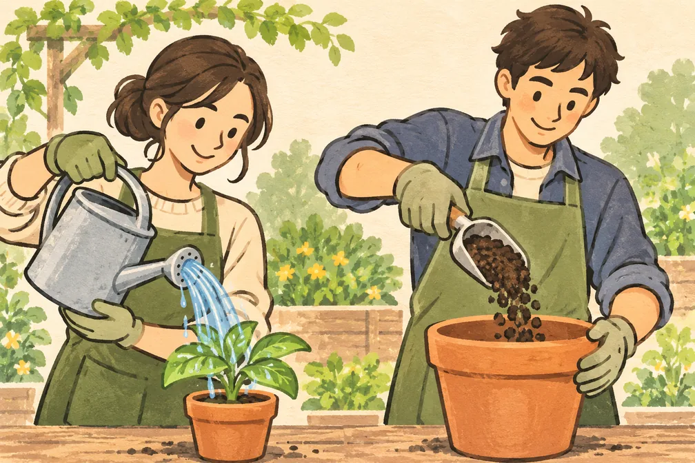
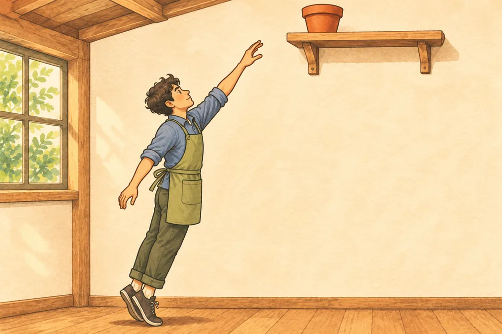

英検準2級のEメール・面接｜質問を返す返信と2枚の絵を確認
準2級の準備では、Eメールの返信と意見論述を分け、面接は準1級の4コマと混同しないようにします。語数を増やす型を覚えるだけでは、相手から求められた返答や、自分からする質問が抜ける場合があります。
Eメールの質問と返答を書き分ける ／ 園芸クラブの絵を見て英語で話す ／ 二人で使う面接練習カードへ

80分の一次と、二次の2枚のイラスト
公式の形式は読む・書く80分、リスニングは形式案内で約25分です。読解は15・5・2・7の計29問、ライティングはEメールと意見論述の2題。リスニングは10問ずつの3部で各1回放送です。特定回の音声長は当該冊子を確認し、常に同じ分数と決めません。
二次は約6分。50語程度の音読、文章質問、人物の行動と状況を描写する質問、自身の意見等を問う質問があります。カードのイラストはPicture A・Bの2枚で、「4コマ漫画を順に説明する」という旧記事の案内を訂正しました。黙読20秒と音読を混同せず、発音・応答内容・文法等も評価されることを確認します。
Eメールは、何を返すか先に分ける
確認した2026年度第2回のEメールでは、相手への返信に加え、下線部の内容について具体的な質問を2つする指示があります。相手の最後の問いに答えるだけで完了しません。この回のEメールは返信本文40～50語が目安です。別の意見論述は50～60語です。受験時はそれぞれの問題の指示を確かめてください。
| 返信前の確認欄 | 自作練習での役割 |
|---|---|
| 下線の語句が指すもの | 自分が質問する対象を決める |
| 自分から尋ねる内容 | 話題について具体的に知りたい点を二つ |
| 相手の問いへの返答 | 自分の意見と、その理由 |
| 最後の点検 | 同じ質問を繰り返していないか、問いに答えたか |
基礎｜同じ読書クラブについて二つ質問し、意見を返す
自作の受信内容は「学校に新しい読書クラブができた。人気になると思う？」です。クラブについて二つ尋ね、人気について意見も返す短い例を作ってください。
解答・考え方を見る
That sounds useful. What time does the club open? How many members does it have? I think the club will be popular because people can learn together and ask questions. It may also help new students make friends at school.
二つの質問は開始時刻と会員数、意見は人気になるという立場、その理由は学び合い・質問や交流です。架空の話題・自作の返信で、公式の採点済み答案ではありません。この見本の返信本文は40語です。
Eメール実習｜何について尋ね、何について答える？
次は、学校の友人から届いたという設定の自作メールです。受信文を読んでから、返信を英語で書いてみましょう。
質問する対象は、下線の our school's new book club です。クラブについて知りたいことを二つ尋ね、友人の最後の問いには自分の意見と理由を返してください。返信本文の目安は40～50語です。
自分の返信を45語の例と比べる
How do club members choose their books? How often does the club meet? I think the library should stay open longer after school because some students have trouble finding a quiet place to read at home. They could finish a chapter there before going home.
初めの二文で、クラブの選書方法と集まる頻度を尋ねました。後半は図書館の開館延長に賛成し、家では静かに読める場所を見つけにくい生徒を理由に挙げています。反対の立場でも、友人の問いに沿って理由を伝えられます。
もし二つ目の質問を How late does the library stay open? と書いたら、下線部についての質問になるでしょうか。どの言葉が指す対象を、どう変えるか考えてください。
紛らわしい質問を直す例を見る
この英文で尋ねているのは図書館が開いている時刻です。クラブについての二問には数えられません。たとえば How long does a club meeting last? なら、知りたい情報を一回の活動時間に変えられます。最初の質問で選書方法を尋ねていれば、尋ねる内容も重なりません。
園芸クラブの2枚の絵で、人物の行動と状況を話す
英検準2級の二次試験には、人物の行動を描写する問いと、その人が置かれている状況を説明する問いがあります。ここでは編集部が作った二つの場面で練習します。絵と問いを見て、まず自分の言葉で声に出してみてください。
絵A 作業台の二人
What are the two people doing?
左の人と右の人について、一人ずつ英語で説明しましょう。

絵Aの場面を日本語で読む
作業台の左では、じょうろから鉢植えの葉に水がかかっています。右では、手に持った小さなスコップから植木鉢に土が落ちています。
絵Aの回答例と別の言い方を見る
The woman is watering a plant. The man is putting soil into a pot.
人を左右で示すなら、The person on the left is watering a plant. とも言えます。They are gardening. は場面全体を表します。そこから水と土の動きを一つずつ言い足すと、この絵を見ていない相手にも二人の動作が伝わります。
絵B 棚の前の一人
What is the man trying to do, and what is the problem?
しようとしていることと、難しい理由を英語で伝えましょう。

絵Bの場面を日本語で読む
棚の上に植木鉢があります。男性はそれを見上げ、かかとを浮かせて手を伸ばしています。指先と鉢の間には、まだ距離があります。
絵Bの回答例と別の言い方を見る
He is trying to get the pot, but the shelf is too high.
二文でも伝わります。He wants to get the pot. He can't reach it. 鉢に向けた視線と手、指先との間にある空間が手掛かりです。He is late. と言うには、時間や約束について別の情報が必要です。
言い直すときは、絵Aでは二人それぞれの動き、絵Bでは目的と困っている点が相手に伝わるかを聞き直してみましょう。例と違う動詞や文の数でも、絵と問いに合う言い方ができます。
二人で練習する｜聞き取れたことを返して、もう一度話す
話し手・聞き手の面接練習カードをダウンロード（PDF・A4片面2枚）
話し手は1枚目、聞き手は2枚目を持ちます。聞き手が質問を読み、話し手は絵を見て英語で答えます。聞き手は「水をやっているのは伝わったよ」のように、実際に聞き取れたことを一つ返してください。話し手は伝わりにくかったところを言い直し、次は役を交代しましょう。
一人で取り組むときは、このページの絵A・絵Bの質問を使えます。日本語の場面描写は絵のすぐ下で読めます。まず自分の言葉で話し、その後で回答例を開いて、自分が伝えた内容と比べましょう。
合否と練習結果を分ける
一次のCSE基準1322、二次406を別に確認します。「4技能合計で苦手を埋めればよい」「返信は文字数が多ければ高得点」とはしません。必要時間100〜150時間等、TOEICやCEFRへの大まかな直接換算、履歴書の最低線という裏付けのない一般論も取り下げました。
練習後は「返信の指示漏れ／意見と理由／語彙・文法／描写の不足」を残し、次の課題を選びます。3級から準2級、準2級プラス、2級という位置関係を知ることと、必ず全級を順番に受けなければならないという判断は分けます。
返信の下書きを、四つの欄で点検する
最初の「クラブは人気になると思う？」という基礎例で、短い下書きを二つ直してみましょう。
自作修正例3：二つとも時刻の質問になっている
Aさんの下書きはWhat time does it open? When does it open?でした。具体的に違う内容を二つ尋ねるには、どう直せますか？
解答・考え方を見る
この文脈では両方とも開始時刻を尋ねており、二つ目をHow many members does it have?へ変える案があります。別案として、活動する場所や選ぶ本の種類を尋ねることもできます。話題と結び付くか、同じ問いの言い換えだけになっていないかを確認します。
自作修正例4：質問に対応しない意見を直す
「クラブは人気になると思う？」という問いへの返信がI like reading. My favorite book is about animals.だけでした。何が欠けていますか？
解答・考え方を見る
好きな活動・本は述べていますが、クラブが人気になると思うかの答えが明確ではありません。一案はI think it will be popular because students can share books and meet new friends.です。自分の好みを話すことと、相手の問いへ答えることを分けます。これは短い修正練習で、返信全体を完成させた答案ではありません。
練習の記録欄は「相手の問い／自分から質問する二項目／自分の立場／理由」とします。書いた後に各欄へ実際の英文を対応させ、空欄がないか、同じ内容を二欄へ置いていないかを見ます。
確認した一次資料
Eメールの目安語数と下線部への質問の指示は、2026年11月19日に2026年度第2回の準2級問題5で再確認しました。合否の案内は同年11月3日に確認。二次試験で人物の行動を描写する問いと状況を説明する問い、その際に使う2枚のイラストについては2026年11月18日に協会の「準2級の試験内容」で再確認しました。
よくある質問
準2級の面接は4コマですか？
Picture A・Bの2枚のイラストを使う形式です。準1級の4コマナレーションと混同しません。
Eメールは相手の質問に答えるだけですか？
確認した回では、下線部について具体的に二つ質問する指示もあります。当日の全指示を確認します。
文法を気にせず文字数を増やせばよいですか？
語数だけでは判断しません。問いへの対応、構成、語彙・文法といった観点で見直します。
次に確認する記事
使った条件と、次に確かめる論点を学習メモへ残せます。
Study Questで学習を記録する →